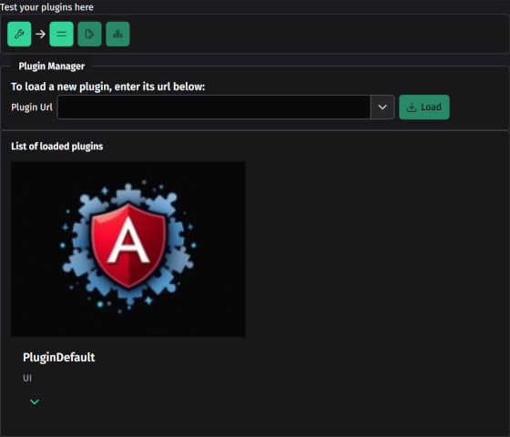
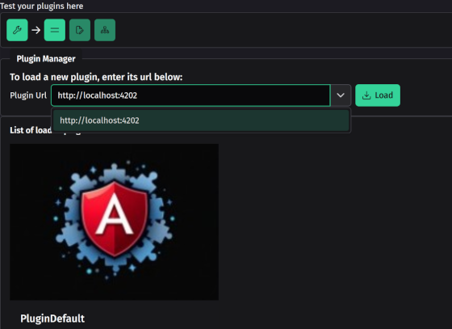
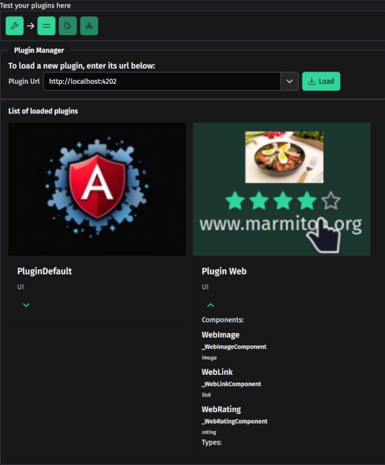
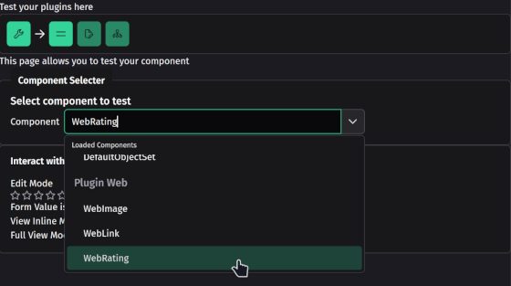
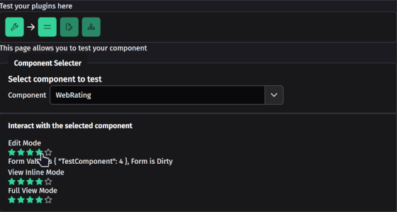

ng-xtend logo
ng-xtend logo
Plugin Tester
This project allows you to load and test in live your developed
components for the ng-xtend
framework
Test your components by 1. Building the xt-components framework
npm install -g @microsoft/rush
rush update
rush build
- Starting your plugin, for example, the web-plugin
cd ../plugins/xt-web
ng serve web-tester
- Then running the xt-plugin-tester with
ng serve plugin-tester

initial screen
- Typing the plugin url in the url bar:

web-plugin url
- Then pressing load button will execute the plugin

loading plugin
- Go to the test page, and selects your component to test

select rating
- the component is then run in editing and viewing mode, allowing you
to test!

Test rating